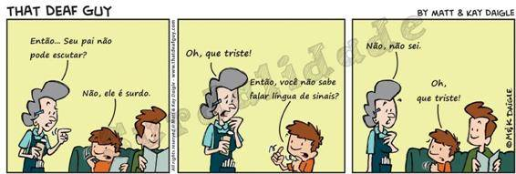

Conhecendo a pessoa surda e a prática inicial da Libras
Índice
- 1 Quem é o surdo? Uma breve introdução!
- 2 Concepções e discursos relacionados à surdez
- 2.1 Surdez: diferença ou deficiência?
- 2.2 Deficiente auditivo, mudinho ou surdo?
- 2.3 Os surdos têm identidade e cultura próprias?
- 2.4 Todos os surdos são mudos e fazem leitura labial?
- 2.5 Os surdos devem ser oralizados para conviverem na sociedade ouvinte?
- 2.6 Todos os surdos usam aparelho ou fazem implante coclear?
- 3 Conhecendo e praticando as saudações iniciais e apresentação pessoal em Libras
- 4 Referências bibliográficas
- 5 Ficha Técnica
1 Quem é o surdo? Uma breve introdução!

Historicamente,
acreditou-se que a linguagem do ser humano relacionava-se à capacidade
de falar oralmente. Logo, os surdos, que, de forma natural e sem
intervenções clínicas, não adquirem essa habilidade de forma espontânea
como os ouvintes, eram vistos como pessoas incapazes e muitas vezes
desprovidos da faculdade de linguagem. A fala oral era algo tão
valorizado na Idade Média de modo que "As igrejas ensinavam os surdos a
falarem para que esses confessassem sua fé, caso contrário, estariam
fadados a queimar no inferno" (Quadros e Karnopp, 2004 p. 36). Vale
destacar que os estudos desenvolvidos a partir da década de 1960, já no
século 20, foram de grande importância para a mudança de concepção
acerca da língua de sinais e surdez, visto que estudos, tais como os de
William stokoe e outros que os seguiram, foram determinantes para
mostrar que as línguas de sinais são completas e complexas do ponto de
vista linguístico. Deste modo, o novo olhar em relação às línguas de
sinais passa a corroborar com um novo olhar sobre os usuários destas
línguas.
O vídeo apresentado no início do livro nos apresenta surdos com uma identidade marcada pela luta por seus direitos e pela afirmação de não serem coitados, limitados, sem língua ou coisa do tipo. Ao contrário, são pessoas que vivem uma experiência sobre o mundo a partir da visão. Todavia, são muitos os discursos em torno dos surdos e sua língua, tanto destes em relação ao universo dos ouvintes, quanto dos ouvintes em relação aos surdos. Tais discursos alimentam mitos de que surdos são mudos, dependentes de ouvintes ou fazem leitura labial por unanimidade. Estas e outras questões relacionadas aos sujeitos surdos é que conduziram as discussões no decorrer deste livro. Além disto, teremos uma prática introdutória da Libras em que estudaremos as saudações iniciais, apresentação pessoal e uso do alfabeto manual. Bora lá!?
2 Concepções e discursos relacionados à surdez

Fonte: Gazeta do Povo/That Deaf Guy - Copyright Mek Daigle
Neste capítulo, trataremos de algumas questões relacionadas à percepção que se tem dos surdos por meio de olhares da surdez enquanto diferença ou deficiência. Discutiremos concepções de surdos e ouvintes sobre o que significa ser surdo a partir de posições embasadas numa visão clinico-terapêutica da surdez; e a partir de uma perspectiva do ouvinte entender a surdez como uma deficiência e muitas vezes o surdo precisará ser oralizado para se integrar ao universo ouvinte; e ainda e sob um viés socioantropológico que percebe a surdez como diferença.
2.1 Surdez: diferença ou deficiência?
Precisamos
pensar sobre quais são os lugares a partir dos quais se fala sobre a
surdez, para então entendermos os discursos que a qualificam. Discursos
acerca da surdez podem surgir de uma ótica clínica e terapêutica, que a
percebe como um desvio a ser reparado por meio de aparelhos amplificação
sonora, fonoaudiologia, ou ainda cirurgia para implante coclear. Ou
ainda tais discursos podem advir de grupos que entendem a surdez como
diferença linguística e cultural, em que surdos interagem no meio social
por meio da língua de sinais e dos recursos visuais a ela associados.
.jpg)
Fonte: Freepik.com/Autor Rawpixel.com e Freepik, respectivamente
Ao
nos perguntarmos se pessoas surdas têm uma deficiência, a resposta
largamente difundida no senso comum seria sim. Conforme, Bisol e Sperb
(2010), tal entendimento se dá baseado na definição de que uma
deficiência existe quando há um desvio, falta, falha ou imperfeição.
Neste caso, qualquer alteração no aparelho auditivo que venha reduzir a
audição considera-se, nesta perspectiva, uma deficiência.
Fonte: Sobotta, vol. 3. Ed. 23ª
Segundo Gesser (2009), se olharmos a surdez por um viés cultural, não a entenderíamos como deficiência. Todavia, em contexto de dicionários, encontramos surdez como condição de quem não ouve nada ou deficiência “física” que impede o indivíduo de ouvir. Já o termo deficiência geralmente está associado a falha ou insuficiência. Nota-se, então, uma perspectiva clínica, embasada naquilo que falta ao surdo, e não em um diferença linguística e cultural deste sujeito.
Um outro olhar acerca da surdez advém da visão socioantropológica desta que ganha força a partir dos anos 70. Este modelo que não toma a deficiência como ponto de partida e entende a surdez como uma diferença cultural.
Fonte: fonoaudiologiacampinas.com/Autor Fonoaudiologia Campinas
Nas
imagens acima, vemos, na primeira, uma cóclea de um indivíduo ouvinte
e, na segunda, uma cóclea de um surdo. Nota-se que em ambas visualizamos
os cílios. A seguir vamos entender um pouco a função deles.
Fonte: Freepik.com/Autor Katemangostar
Ouvido humano capta as ondas sonoras as quais são interpretadas pelo cérebro como sendo uma fala humana, um barulho de um animal ou uma música. Neste contexto, a cóclea, presente no ouvido interno, tem um papel fundamental, visto que nesta região do ouvido é que a energia mecânica do som é convertida em sinais elétricos complexos que serão transmitidos ao cérebro. Na cóclea, estão presentes as células ciliadas, que aparecem nas duas imagens microscópicas do interior da cóclea, um pouco acima. Estas células são sensíveis para detectar diferentes tons ou frequências, de tal modo que o ouvido possa identificar e distinguir o som conforme sua disposição no interior do tubo coclear e por meio de movimentos que produzem sinais elétricos que são transmitidos por meio do nervo auditivo ao cérebro.
Dito isto, você já deve ter visto que tanto no ouvido do surdo, quanto do ouvinte há a presença das células ciliadas. Todavia, estas notadamente se diferem tanto em quantidade, quanto na disposição. O que se percebe é que há uma diferença física que leva a uma consequente diferença na percepção sonora. Assim, partindo do princípio de que deficiência está atrelada à falta, muitos surdos não se veem de tal modo, mas, ao contrário, percebem-se enquanto diferentes em função da diferença de um ou mais aspectos físicos em seu aparelho auditivo.
2.2 Deficiente auditivo, mudinho ou surdo?
Para o senso comum, o termo "Deficiente Auditivo" parece ser menos pejorativo do que utilizar o termo "Surdo". Geralmente, nomear o indivíduo de surdo parece ser preconceito, mas, para uma parcela significante de pessoas nesta condição, ser chamada de deficiente auditivo põe em evidência o estereótipo da falta, do defeito a ser corrigido, baseando-se muitas vezes em uma perspectiva clínica da surdez, em que se faz presente um discurso de normatização e de medicalização" (Gesser, 2009).
Fonte: QConcursos - Copyright Mek Daigle
Como
vimos, há diferentes perspectivas acerca da nomenclatura a ser usada
para se referir àqueles que não ouvem. E, na verdade, escolher este ou
aquele termo nem sempre elimina os preconceitos sociais.
SURDO OU DEFICIENTE AUDITIVO 2

2.3 Os surdos têm identidade e cultura próprias?
Todos nós, quer ouvintes, quer surdos, vivemos permeados por múltiplas culturas. Logo, não há purismo cultural, em que cada qual tem uma identidade singular e uma cultura independente e sem qualquer inter-relação como meio onde está inserido.
Fonte: Freepik.com/Autor pch.vector
Sabemos
que as pessoas surdas não são iguais e, assim como acontece, entre os
ouvintes, manifestam e vivenciam a cultura de formas diferentes.
Os surdos de modo geral apresentam uma cultura baseada em experiências
visuais. Existem diversos elementos que fazem parte da cultura surda,
muitos deles também fazem parte do universo ouvinte, mas, em se tratando
da realidade surda, são marcados pela visualidade e militância
relacionada a acessibilidade e direito linguístico. Deste modo, fazem
parte da cultura surda: a experiência visual, a língua de sinais, o
contexto familiar, a comunidade surda, a participação em associações de
surdos, as artes visuais, o uso de tecnologias, a literatura surda,
entre outros elementos. Na verdade, o termo cultura surda se refere à
forma como surdo interage com as coisas do mundo.
Assim como
essa cultura é marcada pela diversidade, os surdos não formam um todo
homogêneo. Há surdos que fazem uso de aparelhos auditivos, surdos que
usam implante coclear, surdos oralizados e os surdos que fazem uso
exclusivo da língua de sinais. Este conjunto vivencia e contribui
com a cultura surda, porém cada qual com identidade e artefatos
culturais diferentes.
Quando utilizamos o termo "própria" ao falarmos sobre identidade e cultura surda, estamos tratando de uma terminologia que implica a ideia de distinção em relação aos ouvintes e ao mesmo tempo uma marca divisibilidade: "[...] criada a partir de uma 'pseudo' uniformidade coletiva" (GESSER, 2009, p. 53).
Bigogno (2010/11, p. 9) aponta que "para compreender a experiência dos surdos, devemos pensar o mundo sem os barulhos mais corriqueiros: desde o barulho de água enchendo uma jarra ou o barulho da digitação deste texto até campainhas de aviso ou buzinas no trânsito." Na maioria das vezes, é neste contexto não sonoro que a cultura e identidade surda se desenvolvem, somadas a todas as implicações de que os ouvintes nem sempre se dão conta.
O surdo tem características culturais ancoradas na visualidade, porém sua cultura, ainda que historicamente marcada por estereótipos, não pode ser pensada de forma estática, visto que, assim como a sociedade está em constante transformação, a cultura também é dinâmica neste contexto. Além disso, não podemos apagar a diversidade e o multiculturalismo que envolvem as pessoas surdas, as quais podem ser homens, mulheres, negros, indígenas, oralizados, oriundos de grandes centros urbanos ou ainda de cidades do interior. Dito isto, é imprescindível pensar em diversidade ao tratarmos da cultura surda, respeitando seus artefatos culturais ligados a modo visual de agir e interagir com o mundo, ao mesmo tempo transpassados pelos diversos artefatos culturais ligados ao universo ouvinte.
2.4 Todos os surdos são mudos e fazem leitura labial?
Dizer
que o surdo possui mudez muitas vezes se confunde com a visão que temos
de fala com apenas aquilo que é produzido por meio vocal. De fato, este
é o entendimento geral de fala. Contudo, se entendermos fala como
capacidade de se expressar externalizando pensamentos sentimentos
conceitos ideias dentre outros, conclui-se que por meio da língua de
sinais o surdo fala.
Fonte: Freepik.com/Autor karlyukav
Trazendo
a fala para um sentido vocal, ou seja, uma produção advinda do aparelho
fonador humano, o surdo é capaz de falar, não de forma natural
espontânea, mas por meio de terapia fonoaudiológica específica
para tal. Alguns surdos, mesmos usuários da língua de sinais, também
oralizam. Contudo, a partir de uma trajetória de imposição da oralização
perpassada por cansativas sessões de treinos de fala e leitura labial,
muito surdos apresentam uma espécie de indignação e sentimento de
opressão quando o assunto é oralizar. Isto se dá devido ao longo período
em que lhes foi imposta uma metodologia de ensino baseada na
perspectiva oralista. Este período teve origem a partir das deliberações
de um congresso internacional de educação de surdos realizado em Milão,
em 1880. Na ocasião, os surdos não tiveram a oportunidade de decidir
sobre seu processo educativo e a partir de então a deliberação foi de
que toda educação de surdos a partir daí então seria baseada em um
modelo com foco na oralização, deixando de lado a língua de sinais.
No tocante à leitura labial, podemos dizer que é errônea a afirmação de que todos os surdos a praticam. Assim como a capacidade de oralizar, esta habilidade também requer um longo período de treino com profissional especializado. Segundo Gesser (2009), grande parte dos estudos sobre esta questão apontam que não se adquire esta prática de forma natural tal como ocorre na exposição à língua de sinais. Além disso, ler lábios não é unânime entre os surdos, e muito menos uma prática padronizada em que todos apresentam a mesma destreza.
Sobre esta temática, assista ao vídeo a seguir:

Oralização e Leitura Labial - Pílulas Linguísticas
Oralização e Leitura Labial - Pílulas Linguísticas
2.5 Os surdos devem ser oralizados para conviverem na sociedade ouvinte?
Apesar
de a oralização ter deixado marcas negativas em grande parte dos
surdos, muitos destes optam por esta prática de forma exclusiva ou de
forma alternada com a língua de sinais. Dizer que oralizar é uma
condição para conviver entre os ouvintes é um equívoco constatado pelo
fato de que diversos surdos estão presentes em variados contextos,
valendo-se preferencialmente da língua de sinais para comunicação.
Contudo,
apesar de a oralização trazer consigo um percurso histórico negativo,
dado ao fato de um longo período de imposição que se deu a partir do
congresso de Milão, em 1880, e embasado em estigmas de que a
surdez seria uma falha a ser corrigida, oralizar é confortável
linguisticamente para um significativa parcela de surdos. Há movimentos
de surdos oralizados por seus direitos linguísticos.
.png)
Fonte: Mãos que falam: Pensar Educação; Cartaz: Imisal Wordpress/Autor Associação Ouvir, respectivamente

Para saber mais sobre o movimento de surdos oralizados, acesse:
https://cronicasdasurdez.com/surdos-oralizados-nos-existimos-muito-prazer/
Existem extremismos prós e contra a oralização, mas o que se percebe é que, quando o surdos não tiveram uma experiência negativa de imposição, eles lidam tranquilamente com o uso da língua de sinais ou da oralização. Neste contexto, as palavras-chave são respeito e conforto. Cada qual deve ser respeitado no uso da modalidade que lhe traz conforto e segurança, sem taxamento de que se optar por um ou outro lado será mais ou menos surdo.
2.6 Todos os surdos usam aparelho ou fazem implante coclear?
Vamos conhecer os recursos tecnológicos que dividem opiniões entre surdos e especialistas da área médica. Você já ouviu falar Aparelho de Amplificação Sonora Individual - AASI ou ainda do Implante Coclear ou, como dito antigamente, "Ouvido biônico"? Quer saber mais? Vamos lá, então!
Os
AASIs surgiram por volta de de 1940 para dar conta de minimizar
algo considerado uma patologia que comprometia a participação da pessoa
no meio social, a saber: a surdez. A função destes aparelhos é captar o
som do ambiente e conduzi-lo por um canal auditivo que não permite esta
passagem naturalmente em função de alguns tipos de má formações.
Fonte: Design
para saúde e qualidade de vida: desenvolvimento e avaliação
de requisitos de projeto para fone de ouvido inclusivo, Julia Marina Cunha/Autor Museu do Aparelho Auditivo
"A
deficiência auditiva foi considerada como uma doença severamente
incapacitante por muitos séculos. A fim de minimizar seus efeitos,
sistemas de amplificação sonora vêm sendo desenvolvidos e aprimorados."
(Pereira e Feres, 2005 p. 257).
Assim sendo, ancorados na proposta de oralização de surdos que ganhara força após o congresso de Milão em 1980, os aparelhos foram sendo cada vez mais indicados e utilizados por surdos em todo mundo.
Os
AASIs são recursos tecnológicos não cirúrgicos que, juntamente ao
treino fonoaudiológico, habilitam o surdo à comunicação
oral-verbal. Contudo, em meados da década de 70, uma nova tecnologia,
agora cirúrgica, entra em cena para trazer a experiência sonora
também às pessoas com surdez profunda. Chega a era do Implante Coclear -
IC..png)
O
implante coclear é um prótese que contém eletrodos que conduzem o
estímulo sonoro até a cóclea e nesta realizam a decodificação do som e
transmissão da informação sonora ao cérebro. A colocação do implante se
dá por meio de cirurgia. Na sequência, o paciente passa por um processo
de reabilitação até que compreenda bem os sons e os oralize. Alguns
pacientes ficam satisfeitos com o resultado deste procedimento, e outros
alegam ter passado e ainda passam por desconfortos decorrentes da
cirurgia. Contudo, a cada dia pesquisadores vêm buscando alternativas
para minimizar riscos e sequelas do implante, contribuindo para que
aqueles surdos que desejam têm a experiência sonora possam tê-la da
forma mais segura possível.
3 Conhecendo e praticando as saudações iniciais e apresentação pessoal em Libras
Você já sabe que a língua de sinais difere de um país para outro, podendo ter significativas variações até no alfabeto manual. Vamos relembrar o alfabeto e conhecer os números cardinais em Libras. Com este conhecimento, você poderá se apresentar a um surdo e entender qual é o nome dele. Além disso, aprendendo os números em Libras, você pode, por exemplo, dizer sua idade, o número de sua residência ou ainda indicar um endereço ao surdo.
Agora é com você! Vamos praticar?
Fonte: simbolos.net.br/Alfabeto em Libras
3.1 Saudações iniciais e apresentação pessoal em Libras
Uma provocativa inicial!
Imagine que você está trabalhando na recepção de um hotel e chega um hóspede surdo. E agora?! Neste contexto, é comum desejarmos um bom-dia, uma boa-tarde ou uma boa-noite, para assim introduzir a conversa. Na sequência, normalmente se pergunta o nome do hóspede, de que país ou cidade ele vem e quantos dias ele pretende permanecer hospedado. Ualllll!
Isto é, apenas uma conversa introdutória na recepção de um hotel feita comumente com qualquer hóspede que ali chega. Mas, se for um surdo, tudo isso acontecerá por meio da língua de sinais.
Situações como essa podem acontecer em diversos contextos sociais. Afinal, os surdos estão interagindo em vários espaços da sociedade e por meio de sua luta por acessibilidade linguística. Em diversos países, a língua de sinais é legalmente reconhecida, tal como no Brasil, onde, pela Lei No 10.439 de 2002, a Libras é reconhecida como meio legal de comunicação e expressão.
Fonte: Freepik.com/Autor Freepik
3.2 Saudações
Aprender
Libras é uma grande oportunidade de se tornar bilíngue de seu próprio
país. Sim! Como você já sabe, Libras é uma língua e, aprendendo-a, mesmo
de forma inicial, você pode se aventurar na conversa sinalizada e
aprender muito mais em contato com surdos. Além disso, este aprendizado
pode contribuir com sua atuação profissional, quer na docência, quer em
outras áreas. Para dar este "ponta pé" introdutório, vamos assistir e
praticar o vídeo a seguir.

Assista e volte o vídeo imitando os sinais apresentados. Quanto mais praticar, mais rápido aprenderá.
3.3 Apresentação pessoal
No
vídeo a seguir, você terá a oportunidade de aprender e praticar a
apresentação pessoal em Libras. A partir de agora você saberá como dizer
seu nome, perguntar o nome do surdo, falar e perguntar sobre idade,
lugar onde mora e então se envolver numa conversa que sem dúvida lhe
trará muito aprendizado.
Lembre-se de que, enquanto docente, você pode somar na vida escolar de seu aluno surdo pelo simples fato de iniciar um bate-papo com ele, pois muitas vezes este aluno só tem o Intérprete de Libras para dialogar em sinais na escola; e, como grande parte deles são filhos de pais ouvintes, até em seus lares eles têm dificuldade de interagir em sinais, caso os familiares não saibam sinalizar. Libras é língua e, como ocorre no aprendizado de idiomas como inglês, espanhol ou alemão, quanto mais se pratica e se expõe ao novo idioma, mais rápido se adquire fluência.
Então... Tá esperando o quê? Bora lá sinalizar!

4 Referências bibliográficas
![]()
- BRASIL, Presidência da Republica. Lei 10.436, de 24 de abril de 2002. Disponível em: http://www.planalto.gov.br/CCIVIL/LEIS/2002/L10436.htm.
- BIGOGNO, Paula Guedes. Cultura, Comunidade e Identidade Surda: O que querem os surdos?
Disponível em:
https://www.ufjf.br/graduacaocienciassociais/files/2010/11/Cultura-Comunidade-e-Identidade-Surda-Paula-Guedes-Bigogno.pdf,
Acesso em 18/08/2021
- BISOL, Cláudia. SPERB, Tania Mara. Discursos sobre a Surdez: Deficiência, Diferença, Singularidade e Construção de Sentido. Psicologia: Teoria e Pesquisa, Jan-Mar 2010, Vol. 26 n. 1, pp. 7-13
- GESSER, Audrei. LIBRAS?:Que língua é essa?: Crenças e preconceitos em torno da língua de sinais e da realidade surda. São Paulo. Parábola Editorial, 2009.
- PEREIRA, Mariana B, FERES, Maria Cristina L. C. Próteses auditivas. Medicina (Ribeirão Preto) 2005;38 (3/4): 257-261 (Simpósio: SURDEZ: IMPLICAÇÕES CLÍNICAS E POSSIBILIDADES TERAPÊUTICAS)
Principais sites e vídeos:
- https://portalotorrino.com.br/historia-do-implante-coclear/
- https://www.researchgate.net/figure/Evolucao-dos-aparelhos-auditivos-72-Fonte-http-museudoaparelhoauditivocombr_fig5_305726356
- https://images.app.goo.gl/6toxfr8oYvvXwgcj7
- SURDO OU DEFICIENTE AUDITIVO 2 - IFRO Campus Porto Velho Zona Norte - Disponível em: https://youtu.be/HqIQYQz3WH8 Acesso em 17/08/2021
- Oralização e Leitura Labial - Pílulas Linguísticas - Disponível em: https://youtu.be/jXXqu0Da97c Acesso em 17/08/2021
- Implante Coclear - Jornal visual – 19/03/2010 - Disponível em: https://youtu.be/1YL7G_-z-C0 Acesso em 17/08/2021
- TV INES - Disponível em: http://tvines.org.br/ Acesso em 17/08/2021
- TV CES - Sou surdoT - Disponível em: https://youtu.be/mVGFpCEa2hg - Acesso em 17/08/2021
- Aula 01 - Glossário 01 – Saudações. Disponível em: https://youtu.be/IoRkuWWliFM - Acesso em 18/08/2021
- Apresentação pessoal em Libras. Disponível em: https://youtu.be/wWUgNiPhqyU - Libras UEL Acesso em 18/08/2021

5 Ficha Técnica
![]()
|
Título |
Conhecendo a pessoa surda e a prática inicial de Libras |
|
Autoria |
Carla Rejane de Paula Barros Caetano (2021) Fernanda dos Santos Nogueira (2021) |
|
Design gráfico |
Camila Karoline Justino Marques Luiza Fonseca de Souza |
|
Design instrucional |
Michele Silva da Mata |
|
Revisão textual |
Cláuberson Correa Carvalho |

Este trabalho está licenciado com uma Licença Creative Commons - Atribuição-NãoComercial-CompartilhaIgual 4.0 Internacional.